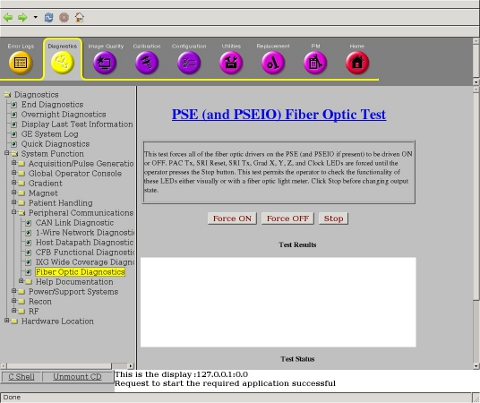

Operating Documentation
Direction 5670006, Rev# 1
Discovery MR750w GEM Service Methods
Module Version 3.0, Version Date 10/14/11
Operating Documentation |
| Required Persons | Preliminary Reqs | Procedure | Finalization |
|---|---|---|---|
| 1 | Not Applicable | 15 mins | Not Applicable |
This procedure only applies to systems with a Pulse Sequence Engine (PSE). This test forces all of the fiber optic drivers on the PSE (and PSEIO if present) to be driven ON or OFF so light emitted diodes (LEDs) in the fiber optic cables can be observed; or when applicable, measured using a fiber optic light meter. When illumination from a cable is measured using a light meter, emitted light must meet the required system specification provided with the test procedure. PAC Tx, SRI reset, Grad X, Y, and Z, and Clock LEDs are forced ON until the operator presses the [Stop] button.
Visual testing is sufficient for this test procedure; a fiber optic light meter, Part #: 46-317830G1, is optional. For more information, see Fiber Optic Light Meter Kit Parts Breakdown.
Visual testing is sufficient for this test procedure; a fiber optic light meter, Part #: 46-317830G1, is optional. For more information, see Fiber Optic Light Meter Kit Parts Breakdown.
Using the GE Service Browser, select Diagnostics > System Function > Peripheral Communications > Fiber Optic Diagnostics to navigate to the PSE (and PSEIO) Fiber Optic Test screen (shown below).
Illustration 1: PSE (and PSEIO) Fiber Optic Test

Click [Force ON] to turn on all fibers.
Visually inspect the PAC out connector:
The PAC Out (J10) connector of the PSE board should be bright.
The PSEIO connector should be bright.
If using a light meter, the output should be > -17 dBm.
Click [Force OFF] to turn off all fibers. Confirm that all fibers (PAC Out and PSEIO connectors) are dark.
If any of the results fail, replace the PSE board.
Conclude the testing by clicking [STOP].
Verify all removed fiber optic cables are reinstalled correctly.
Click [Exit] to quit the tool.